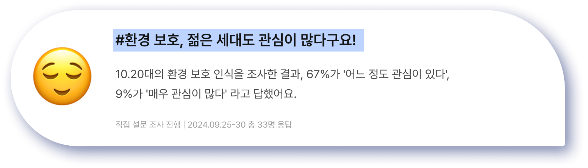
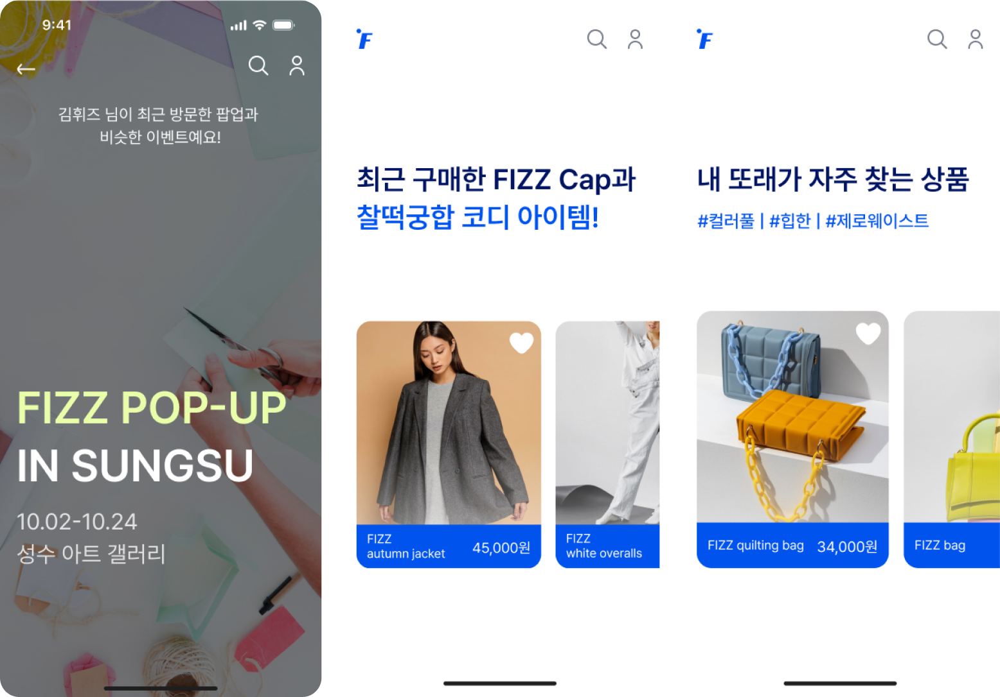

기후변화, 생태계 파괴와 자원 고갈까지. 우리가 직면한 환경 문제들은 더 이상 먼 미래의 이야기가 아닙니다.
더 나은 내일을 위해 사람들은 환경 문제에 관심을 가지고 목소리를 내기 시작했는데요.
젊은 세대부터 시작해,
이제 모두의 관심사가 된 환경!

그런 흐름 속에서
업사이클링 시장이
성장하고 있어요.
업사이클링은 쓰레기 문제 해결을
위해
주목받는 개념으로, 버려진 물건에 새롭게
재탄생 시키는 걸 의미해요.
10배 대폭 증가
업사이클링 제품 호감도 및 접근성 평가 결과, 업사이클링 제품의 낮은 접근성 때문에
직접적인 실천까지는 도달하지 못하고 있었어요.


환경에 대한 인식은 높아지고 있지만, 실질적인 실천으로
이어지지 않는 경우가 많습니다. 이를 어떻게 극복할 수 있을까요?

여기 두 사용자들의 고민을 들어볼까요?

업사이클링에 새로운 탄산을 더하는

FIZZ는 탄산음료의 거품을 뜻해요. 시원하고 짜릿한
탄산음료처럼, 업사이클링에도 새로운 ‘탄산’을 더해
상쾌하고 재미있는 경험으로 바꿔볼까요?


사용자들이 더욱 알차게 즐길 수 있도록 서비스를 구성했어요
사전진단


사전진단 결과를 바탕으로 피즈가 여러분에게 맞춤형 알고리즘을 생성해드릴게요.
Home
추천 제품과 이벤트 배너 등, 나에게 필요하고 딱 맞는 정보들을 한눈에 볼 수 있어요.


잠깐!
FIZZ는 단순한 구매가 아닌 ‘특별한 경험’을 제공해요
내가 구매한 제품이 얼마나 많은
탄소를 줄이는지 확인해 보세요!
제품과 관련된 흥미로운 스토리와 제작 과정을 자세히 알 수 있어요.
구매하는 순간, 그 제품의 가치와 의미를 더 깊이 느낄 수 있답니다.

Fit Me
나만의 디자인으로 즐기는 커스텀 서비스부터, 집에서 간편하게 따라 할 수 있는 DIY
제품까지! 내 물건이 새롭게 태어나는 FIZZ만의 특별한 배송 서비스도 만나보세요!
FZ Talk
오늘 환경 보호 활동을 하셨나요? 여러분의 경험을 자랑하고, 유용한 정보를 나눠봐요!
환경 꿀팁과 이슈는 피즈가 깔끔하게 정리해 드릴게요.


Fop Up
내 상황과 체험 스타일에 맞춰 나에게 딱 맞는 팝업 이벤트와 환경 프로그램을 찾아보세요.
앱 내에서 간편하게 예매하고 관리할 수 있어요.


BeneFit
일상에서 쉽게 참여할 수 있는 환경 챌린지로 부담 없이 게임하듯 환경 보호를
실천해
보세요! 얻은 리워드는 다양한 제휴 서비스와 교환해 활용할 수 있습니다.


피즈는 청량하고 시원한 느낌의 이름처럼, 깨끗해진 지구를 떠올리게 하는 색감으로 소비자에게 다가갑니다.
환경 보호와 지속 가능성의 메시지를 담아, 피즈의 상쾌함과 신선함에 빠져보세요!

COLOR
세 가지 컬러 조합은 환경 보호 속 깨끗하진 청량한 지구를 연상시키도록 선정되었어요.
사용자의 눈을 고려해 시각적으로 편안한 색상을 선택했으며, 라임색은 눈의 피로를
줄일 수 있도록 채도를 조절했습니다.
Character
피즈의 특별한 네 캐릭터를 소개합니다! 그들의 각기 다른 이야기를 들어볼까요?